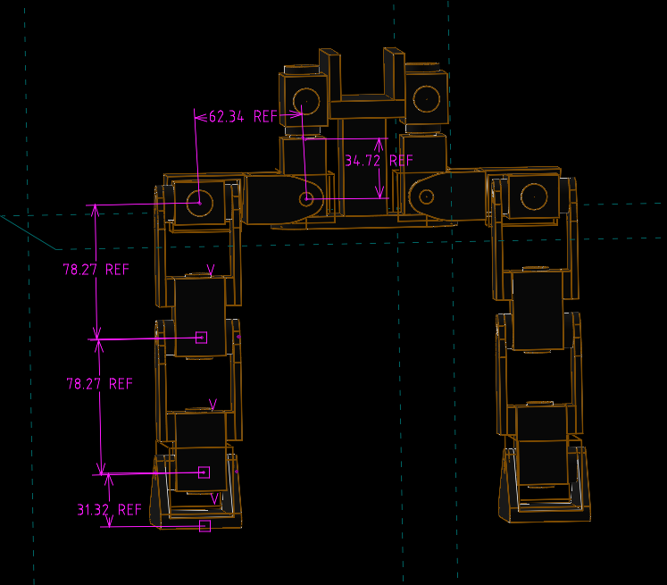

O_Box <<
Previous Next >> O_Prompts
O_Analysis
https://github.com/tayalmanan28/Bipedal-Robot-Papers

OpenDuck Mini 的單腿結構（5DoF）
Hip Yaw（髖部水平旋轉）- link1 長度即馬達旋轉中心至馬達底部的長度 0.03472m
Hip Roll（髖部側擺）- link2 長度 0.06234m
Hip Pitch（髖部前後擺）- link3 長度 0.07827m
Knee Pitch（膝關節）- link4 長度 0.07827m
Ankle Pitch（腳踝前後擺）- link5 長度 0.03132m
Base -- Hip Yaw (rot_z) -- Hip Roll (rot_y) -- Hip Pitch (rot_x) -- Knee Pitch (rot_x) -- Ankle Pitch (rot_x) -- Foot (end-effector)
使用 ikpy 進行逆運動學運算:
導入必要的類別 (Chain, URDFLink, numpy)。
定義機器人的幾何結構，創建一個 Chain 對象。
定義目標位置或姿態 (target_position 或 target_frame)。
呼叫 chain.inverse_kinematics() 即可獲得所需的關節角度。
openduck_ikpy1.py (未移除警告) openduck_ikpy2.py (已移除警告)
Inverse Kinematics 程式將末端執行器移動到，以第一旋轉軸中心為座標原點的目標相對位置 [0.05,0.02,−0.15] (米)。
冗餘度： 在這個特定的目標位置下，ikpy 求解器將大多數的工作分配給了 hip_yaw 和 hip_roll 兩個關節，而 hip_pitch、knee_pitch 和 ankle_pitch 三個俯仰角（理論上用來控制腿部彎曲和長度的主關節）都保持在它們的初始位置 0 rad。表示此目標位置僅靠髖關節的平移旋轉就能達到。
ikpy 的預設求解器 (基於梯度下降) 傾向於選擇最接近初始位置的解，由於您設置的初始位置都是 0 rad，因此它選擇了俯仰角接近 0 的解。
關節名稱 角度（弧度） 角度（約略） 備註
hip_yaw 0.3805 rad ≈21.8∘ 髖關節偏航角
hip_roll −0.2837 rad ≈−16.3∘ 髖關節滾轉角
hip_pitch 0.0000 rad 0∘ 髖關節俯仰角
knee_pitch 0.0000 rad 0∘ 膝關節俯仰角
ankle_pitch 0.0000 rad 0∘ 踝關節俯仰角
步態的角色： 步態 (Gait) 是一個動態、有時間序列的運動過程。它定義了 Openduck 如何按順序移動其雙足，其中涉及：
- 足端軌跡 (Foot Trajectory)： 腳尖在空中和地面上移動的路徑（通常是週期性的曲線，如正弦曲線或圓弧）。
- 相位 (Phase)： 哪一條腿什麼時候在空中 (Swing Phase)，什麼時候在地上 (Stance Phase)。
- 穩定性 (Stability)： 確保機器人的質心 (Center of Mass, CoM) 始終落在支撐多邊形內（靜態穩定性）或在動態上穩定。
一、步態類型（Gait Type）選擇：
步態類別：
ZMP-based gait（零力矩點）：適合穩定行走
CPG（Central Pattern Generator）：模仿生物神經節律
步態庫（Gait Library）：預定義步態參數
二、步態參數（Gait Parameters）包括：
步長（Step Length）
步高（Step Height）
步頻（Step Frequency）
支撐相時間（Support phase time）
擺動相時間（Swing phase time）
三、設定流程：
設計足端軌跡（在空間中畫出足的移動路徑）
採用拋物線形或貝茲曲線軌跡
在某個時間內足端從 A 點擺到 B 點
對每個時間點做 IK 求 joint angles
依據時間產生 joint command (例如 100Hz 控制迴圈，每 10ms 更新一次關節角度)
步驟:
建立單腿的 D-H 參數模型
寫出 forward kinematics
用 symbolic 解反向運動學（或用數值法）
設計簡單的 foot trajectory（比如步高 5cm，步長 10cm）
實作 gait scheduler：分成支撐相與擺動相
讓雙腿交錯控制（左腳擺動時右腳支撐）
步態規劃:
https://github.com/ami-iit/bipedal-locomotion-framework
若希望 Webots 結合上列 BLF 框架，在 Windows 環境中可以使用 conda 指令安裝:
conda install conda-forge::bipedal-locomotion-framework-python
提問: Webots 模擬環境如何與 Bipedal Locomotion Framework (BLF, 即 bipedal‑locomotion‑framework) 結合應用?
提問: 假如採用 https://github.com/aidudezzz/deepbots 與 webots 對 openduck 進行步態規劃學習, 該如何進行?
O_Box <<
Previous Next >> O_Prompts